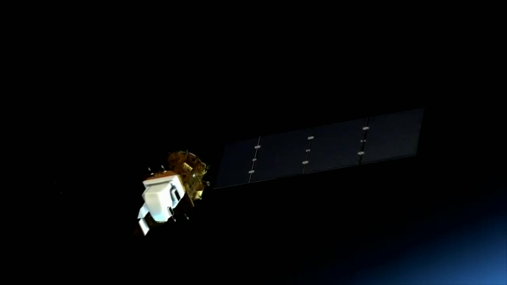
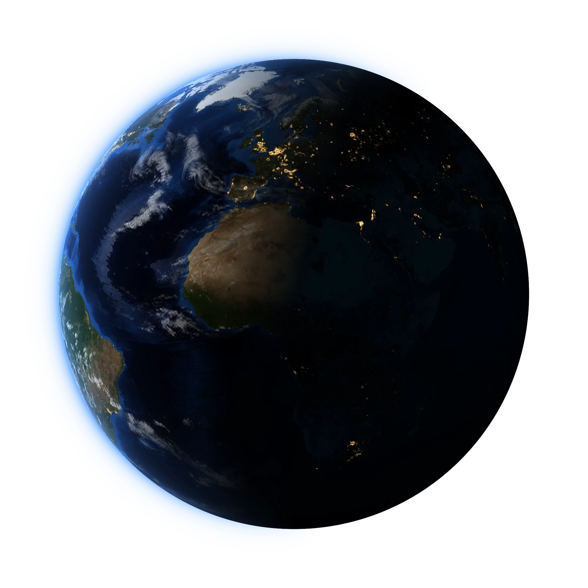

Never Stranded
Agbára grabs any satellite by its launch ring and becomes its engine.
Film: NASA, Landsat, Psyche, Europa Clipper and the ISS
Every satellite is launched sitting on a ring. When its fuel runs out, it is stuck where it is. Agbára flies up, grabs that ring and becomes the satellite’s engine: a new orbit, a longer life, or a clean exit.
The machines we’re building
- AgbáraThe servicing tug. Grabs a satellite by its launch ring, moves it, lets go, and flies to the next one.
- IgweElectric Hall thrusters that run on solid iodine. The engine inside Agbára, and sold as parts.
-

AnyaAgbára’s eyes. Lidar and cameras that find the launch ring and two answers that must agree. -
 CaelumRadios, gimbal-free laser heads and antennas, sold as parts, and a showcase spacecraft that flies them.
CaelumRadios, gimbal-free laser heads and antennas, sold as parts, and a showcase spacecraft that flies them.
-
 EasleyWhere every mission flies first. Our sister company’s engineering platform.
EasleyWhere every mission flies first. Our sister company’s engineering platform.
Ibom Space is building
one tug for four jobs
- 01
Relocation
Raise, lower or move a satellite to a new slot, even one never designed to move.
- 02
Life extension
Stay attached and keep the satellite on station after its own fuel runs out.
- 03
Disposal
Push a dead or retiring satellite down to burn up, inside the five-year rule.
- 04
Inspection
Nyoka flies around a satellite and images it before any capture, or as a service on its own.
Film: NASA
Built to reach the satellites
others can’t

Low Earth orbit is where Agbára starts. Most satellites fly here, along with the constellations that will need satellites moved and retired by the hundred. Our first tug is sized for it.
Medium Earth orbit carries navigation and new broadband fleets. Igwe’s iodine thrusters climb slowly but efficiently, so a tug can raise itself here without a big chemical stage. Later.
Geostationary orbit, 36,000 km up, holds the most valuable satellites of all. A larger Agbára with NASA’s big-ring gripper, for launch rings 937 to 1,666 mm across, is how we plan to extend their lives. Later.
“What happens to a satellite when its fuel runs out?”
Today, nothing. It drifts until it falls, or it becomes debris. Agbára is our answer.
Meet AgbáraFilm: NASA, Europa Clipper’s solar array
Stranded? We’ll come get it.
Film: NASA, Earth from the International Space Station